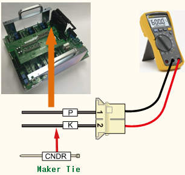
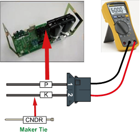

기존 에러코드: E0010 AMP의 회생방전 저항 과열
1.1.51.1. 개요
로봇의 감속 또는 중력방향으로 하강 시 발생한 회생전력을 저항을 통하여 방전하는데 이 저항의 과열에 관련한 에러입니다. 과열 검지센서 회로의 고장, 저항의 단선 및 3상 전원전압의 초과로 발생할 수 있습니다.
1.1.51.2. 원인 및 점검방법
|
과열 에러는 저항의 단선이나 방전제어의 이상의 경우에도 발생합니다. 또한, 회생방전 저항값과 3상 전원 전압의 증가로 인하여 발생할 수도 있습니다
<모터 On 하는 순간에 항상 발생하는 경우> (1) 회생방전 저항값을 점검하여 주십시오. n CNDR 케이블의 저항값을 점검하여 주십시오. (2) 서보구동장치를 점검하여 주십시오. n 서보 구동장치를 교체한 후 점검하여 주십시오. (3) 전원 관련 부품을 점검하여 주십시오. n 제어기 내부 3상 전압을 점검하여 주십시오. n 제어기 입력 3상 전압을 점검하여 주십시오. |
(1)회생방전 저항값 점검하여 주십시오.
과열 에러는 저항의 단선이나 회생방전 저항값의 증가로 인하여 발생할 수도 있습니다.
n 회생방전 저항의 단선 점검
CNDR 케이블의 끝 단에서 측정한 저항 값이 수 M옴으로 확인되면 저항의 단선 또는 내부 배선 접촉 불량입니다. 회생저항을 정상품과 교체하시거나 배선을 수정하여 주십시오.

(a) Hi5a-S00 제어기
(b) Hi5a-S30 제어기

(c) Hi5a-N00 제어기

(d) Hi5a-N30 제어기
그림 1.160 CNDR에서 저항 값 측정
(2)전원 관련 부품을 점검하여 주십시오.
과열 에러는 방전제어 회로 이상의 경우에도 발생합니다.
n 구동장치의 교체 점검
회생방전 저항 과열 에러를 검지하는 모듈을 교체하여 에러의 재발 여부를 확인하여 주십시오. 모듈 내부의 회로 고장으로 인하여 에러가 지속적으로 발생할 수 있습니다.
Ø Hi5a-S제어기
l 중형 로봇용 서보 구동장치: SD3X3Y
l 소형 로봇용 서보 구동장치: SD3A3D
Ø Hi5a-N제어기
l 중형 로봇용 다이오드 모듈 : SD1L2C
l 소형 로봇용 서보 구동장치 : SA3A3D
(3)전원 관련 부품을 점검하여 주십시오.
과열 에러는 저항의 단선이나 방전제어의 이상의 경우에도 발생합니다. 또한, 회생방전 저항값과 3상 전원 전압의 증가로 인하여 발생할 수도 있습니다.
n 제어기 내부 3상 전압 점검
회생방전 동작은 약 DC 375V에서 시작합니다. AC 242V이상의 전압이 서보 구동 장치에 입력되는 경우에는 모터 On하는 순간에 회생방전 저항 과열 에러가 발생할 수 있습니다. 입력전압이 허용 범위를 초과하는 경우에는 제어기 입력 전압 점검절차와 제어기 내부 3상 전압 점검 절차에 따라 점검하시기 바랍니다.
Ø 서보 구동장치 입력 전압 사양 : 3상 AC 220V
Ø 모터 On 시 허용 범위 : 198V ~ 242V